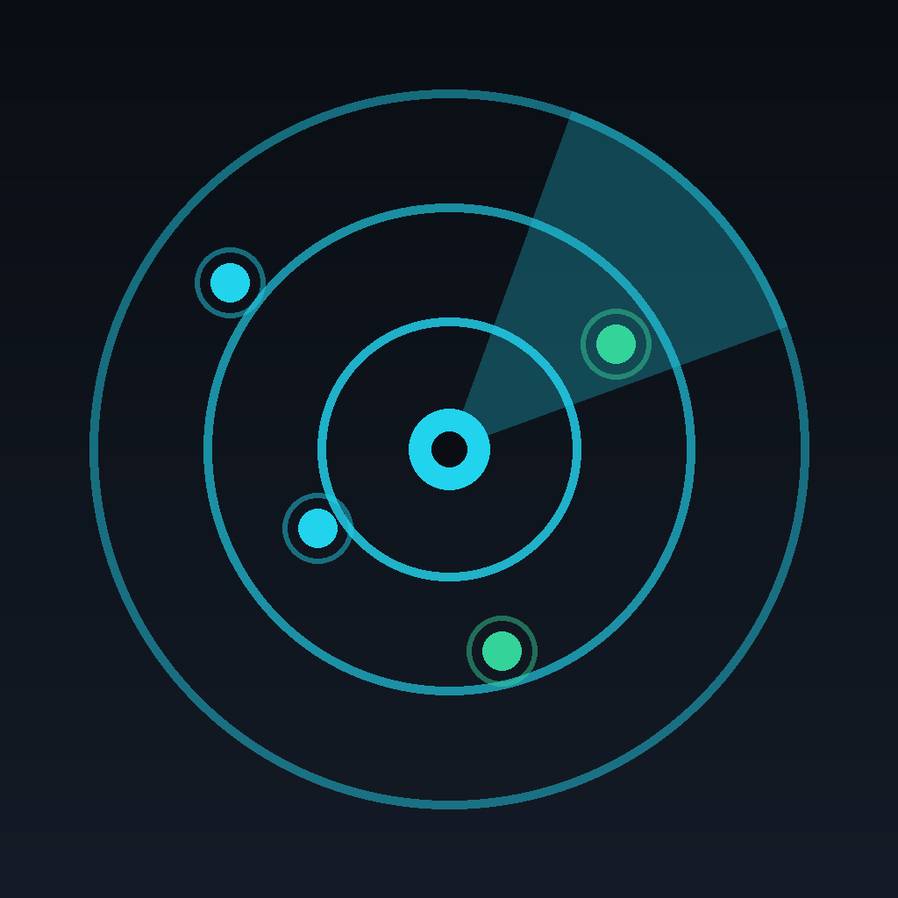

Last updated: July 2026
NetProbeX has no account, no cloud, and no server of ours. Everything it discovers about your network — devices, ports, raw responses — is processed on your device and shown only to you. The app shows ads through Google AdMob to stay free, which is the only third-party data sharing that happens.
NetProbeX is a network scanning and diagnostics tool. When you run a scan, it:
This scanning happens entirely on your device, over your own local network. NetProbeX does not send scan results, discovered devices, or any network data to us or to any third party. We have no servers to send it to.
A note on MAC addresses: iOS itself restricts what a network-scanning app can see about other devices' hardware (MAC) addresses on real hardware, as an anti-tracking privacy protection. NetProbeX respects this — it does not attempt to work around it.
The following stays locally on your device only, and is never transmitted anywhere:
Deleting the app removes all of this. We have no way to access it, even if we wanted to.
NetProbeX asks for location permission for one narrow reason: iOS requires it before an app is allowed to read the name (SSID) of the Wi-Fi network you're connected to, shown in the Network Info tool. NetProbeX does not use your location for anything else, does not track your location over time, and does not transmit any location data anywhere. This permission is optional — the app works without it, just without the Wi-Fi network name displayed.
The Network Info tool includes an optional, manual "Check" button that looks up your public (internet-facing) IP address. This works by making a plain request to a simple, no-account IP-echo service (such as ifconfig.me or a similar provider) — nothing else about your device is sent. This only happens when you tap the button; it is never automatic.
NetProbeX displays a small banner ad, supplied by Google AdMob, to keep the app free with no account or subscription. To serve ads, AdMob may collect and process information that can include a device advertising identifier (IDFA), coarse location, device information, and ad-interaction data. This is handled by Google under its own privacy policy, not ours:
Ads in NetProbeX are configured for a maximum content rating of "G".
On first launch, iOS asks whether you allow NetProbeX to track your activity across other companies' apps and websites (the App Tracking Transparency prompt). If you decline, ads still appear but are not personalized, and your advertising identifier is not used for tracking. You can change this choice anytime in iOS Settings → Privacy & Security → Tracking.
NetProbeX is entirely free with no sign-up, no account, and no in-app purchases. There is nothing to buy and nothing to log into.
Apart from Google AdMob (advertising), NetProbeX does not use any analytics, crash-reporting, or social-media tracking SDKs.
NetProbeX is a general-purpose network utility, not directed at children, and does not knowingly collect personal data from anyone, regardless of age.
If this policy changes, the updated version will be posted at this URL with a new "Last updated" date.
Questions about privacy? Reach out at justintas@gmail.com